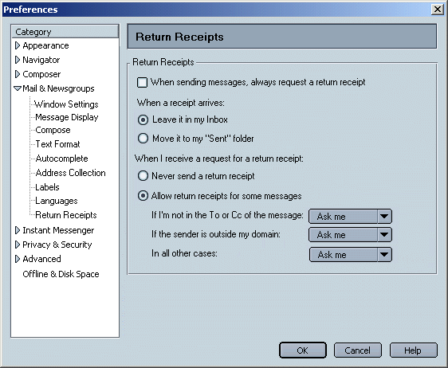
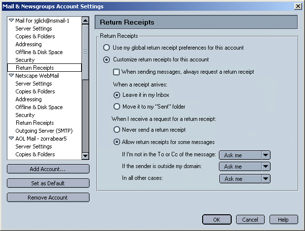
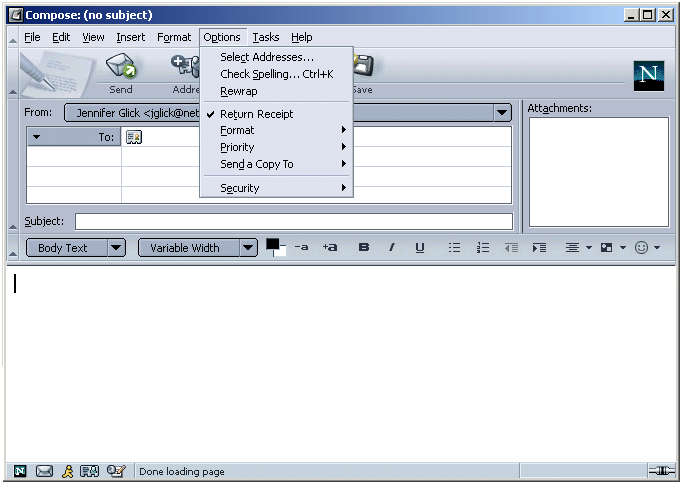
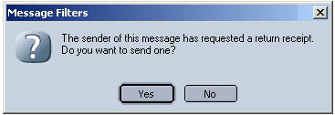

|
MachV/Mozilla: Mail & News |
UI
Specification
|
|
Return Receipts |
Last Modification: |
|
Author: Jennifer Glick |
Status: Draft |
||||||||||||
|
Quicklinks:
|
Feature Team
|
Generates a Read receipt upon opening of a mail message, which is then sent to the original sender. Only MDN receipts being implemented for now (not DSN).

Default is to use the global settings for return receipts. When "Customize return receipts for this account" radio button is not selected, its child options are disabled.

Users can enable or disable return receipts on a per message basis using the Mail Compose Options menu. If preferences are set to always request a return receipt, the "Return Receipt" menu item should have a check mark. Selecting the Return Receipt menu item again removes the check mark and the message will be sent without requesting a return receipt.

User opens a message and the sender has requested a receipt. The following dialog appears on top of the opened message.

The user receives an email receipt when the recipient has opened the email message.